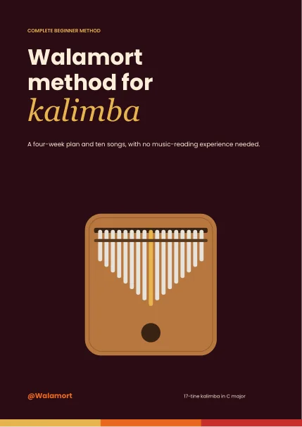
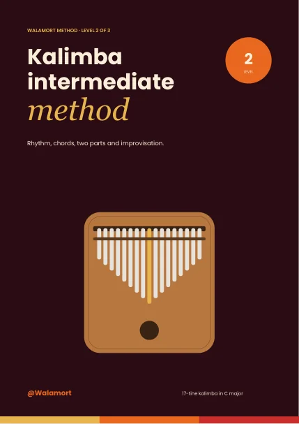
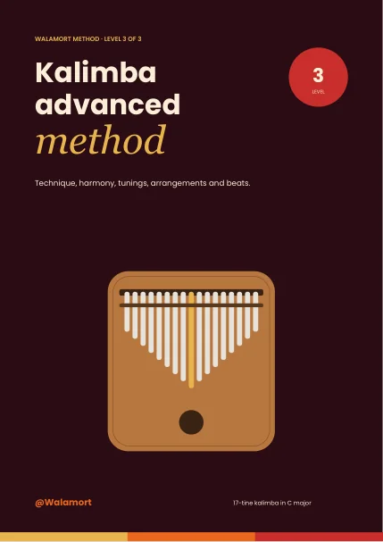
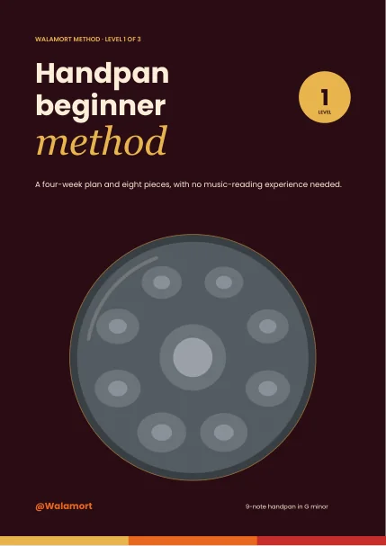
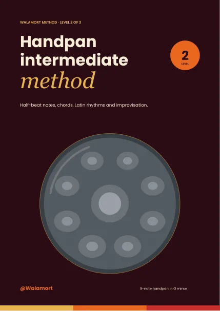
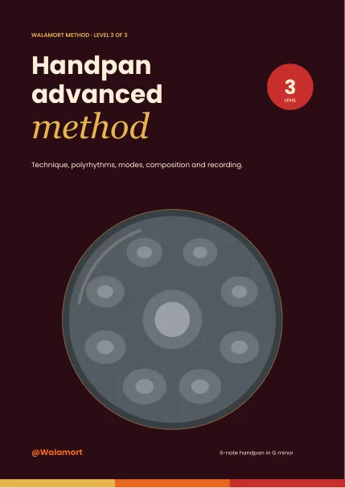
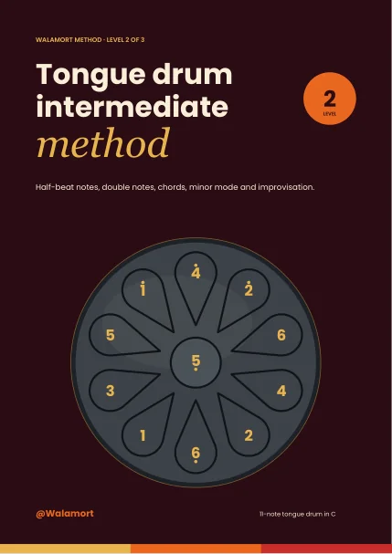
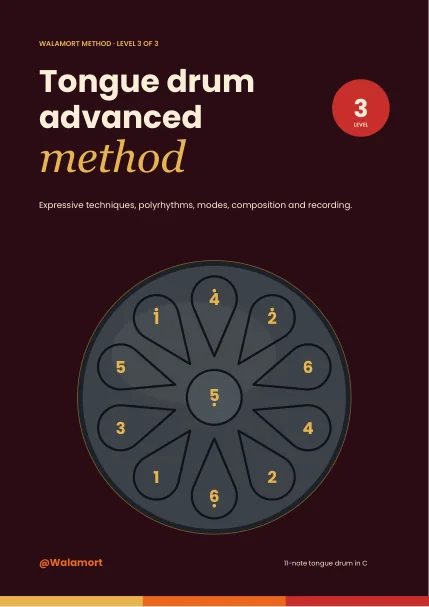
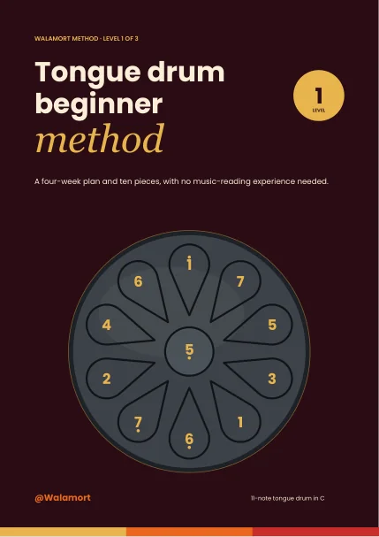

ES · EN · PT-BRKalimba · Beginner
Four weeks, ten songs, rhythm, chords and first sound effects.
19 pages · 17 tines in C major.
PDF editions included: English · Español · Português (Brasil)
WALAMORT · METHODS & WORKBOOKS

Start with a sample, find a path and choose independent or guided learning.


One purchase of the product includes all three languages as separate files. Check the final price, currency and terms on Hotmart. The product name there may remain in Spanish.
The creative pilot workbooks and their samples are still in Spanish. Their complete editions are not yet on sale.
CHOOSE A FIRST STEP

ES · EN · PT-BRFour weeks, ten songs, rhythm, chords and first sound effects.
19 pages · 17 tines in C major.
PDF editions included: English · Español · Português (Brasil)

ES · EN · PT-BRSeven chords, two-part playing, accompaniment and pentatonic improvisation.
17 pages · 17 tines in C major.
PDF editions included: English · Español · Português (Brasil)

ES · EN · PT-BRStaff reading, alternate tunings, harmonization, arrangements and beat making.
17 pages · 17 tines in C major.
PDF editions included: English · Español · Português (Brasil)
 ES · EN · PT-BR
ES · EN · PT-BRAll three levels: twenty songs and pieces, from first notes to original arrangements.
53 pages · 17 tines in C major.
PDF editions included: English · Español · Português (Brasil)

ES · EN · PT-BRPosture, technique, grooves and eight original pieces for a guided start.
19 pages · 9 notes in G minor.
PDF editions included: English · Español · Português (Brasil)

ES · EN · PT-BRGhost notes, gu, chords, progressions, cumbia, salsa and six pieces.
18 pages · 9 notes in G minor.
PDF editions included: English · Español · Português (Brasil)

ES · EN · PT-BRPolyrhythms, irregular meters, modes, composition and recording with four pieces.
18 pages · 9 notes in G minor.
PDF editions included: English · Español · Português (Brasil)
 ES · EN · PT-BR
ES · EN · PT-BRAll three levels and eighteen original pieces: technique, creation and recording.
55 pages · 9 notes in G minor.
PDF editions included: English · Español · Português (Brasil)
Four weeks and ten songs and pieces: mallets, fingers, both hands and improvisation.
19 pages · 11 notes in C, without B.
PDF editions included: English · Español · Português (Brasil)

ES · EN · PT-BRDouble notes, chords, bass and melody together, minor mode and improvisation.
16 pages · 11 notes in C, without B.
PDF editions included: English · Español · Português (Brasil)

ES · EN · PT-BRTremolo, damping, grooves, polyrhythms, composition and recording.
16 pages · 11 notes in C, without B.
PDF editions included: English · Español · Português (Brasil)

ES · EN · PT-BRAll three levels and twenty-one songs and pieces for the complete diatonic model with B.
51 pages · 11 notes in C, including B.
PDF editions included: English · Español · Português (Brasil)
New · Free sampleBuild triads, relate scale degrees, explore inversions and harmonize a melody.
Five-page Spanish sample. The full pilot workbook has 20 pages: exercises, project, four-week plan and review.
Pilot edition under editorial review. The full edition is not for sale yet; no price or release date announced.
New · Free sampleDevelop a short idea, shape phrases and create an eight- or twelve-bar miniature.
Five-page Spanish sample. The full pilot workbook has 20 pages: exercises, project, four-week plan and review.
Pilot edition under editorial review. The full edition is not for sale yet; no price or release date announced.
 New · Free sample
New · Free sampleExplore silence, response, pentatonics, target notes and variation with clear constraints.
Five-page Spanish sample. The full pilot workbook has 20 pages: exercises, project, four-week plan and review.
Pilot edition under editorial review. The full edition is not for sale yet; no price or release date announced.
 New · Free sample
New · Free sampleMixing, EQ, compression, delay, reverb and A/B comparisons connected to the lab.
Five-page Spanish sample. Full 20-page pilot with ten experiments, a plan and an observation sheet.
Full edition under editorial review, not for sale yet.
Prepare a lesson, workshop or institutional inquiry. Review the message before sending. Current lessons and workshops are delivered in Spanish.
Build my inquiryThe nine individual methods and three instrument packs include English, Spanish and Brazilian Portuguese PDFs on Hotmart. The creative workbooks remain pilots: samples are available; full editions are still under review.
For instrument methods, check your model’s tuning and features. For theory and creation, you can start with the free virtual tools.
Payment takes place outside Walamort on Hotmart. Review the product, currency, final total, delivery and refund terms there before paying. This page does not process cards.
Complete ten-page guides for handpan and tongue drum. They are free; no purchase is needed to download them.
10 pages · English
Download guide PDF →10 pages · English
Download guide PDF →You can also explore the existing introductory guide.
Download guide · Español →The individual methods use an 11-note C model without B; the pack uses the complete C major scale including B. These are different note maps. Check your instrument’s actual notes before choosing.